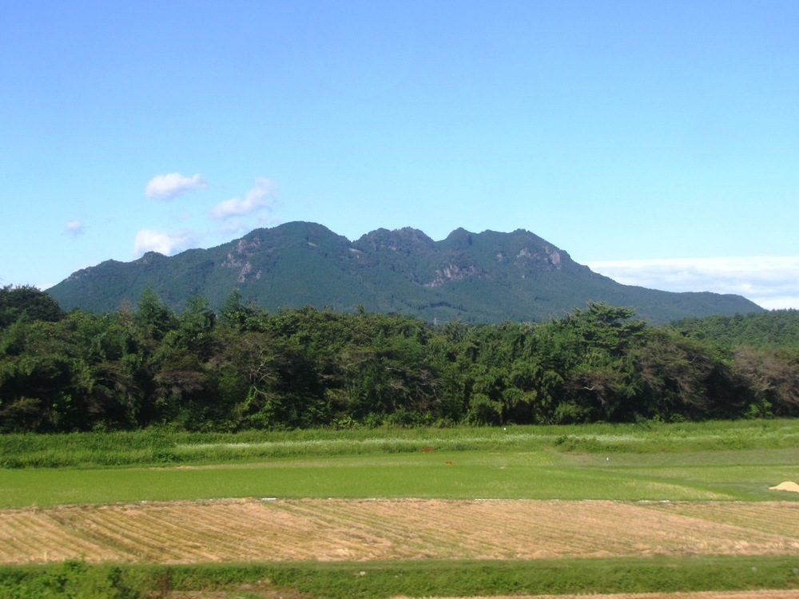
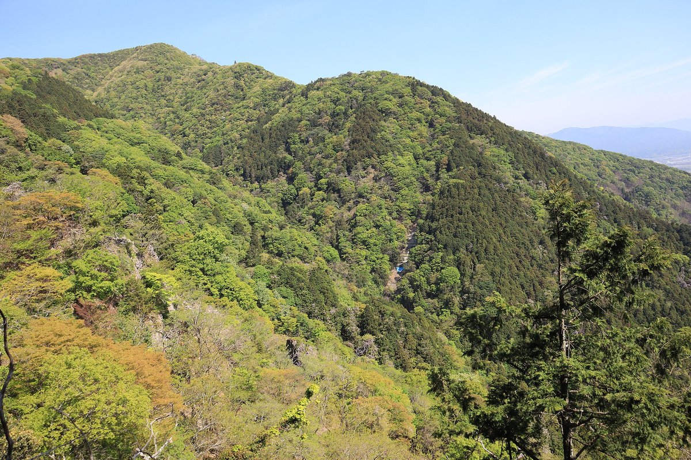
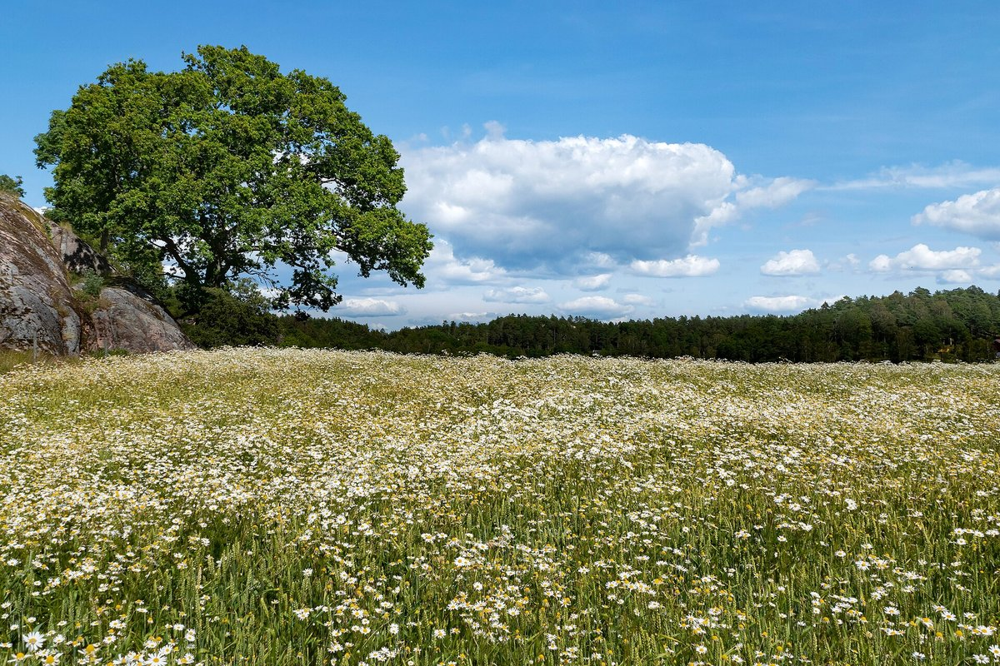
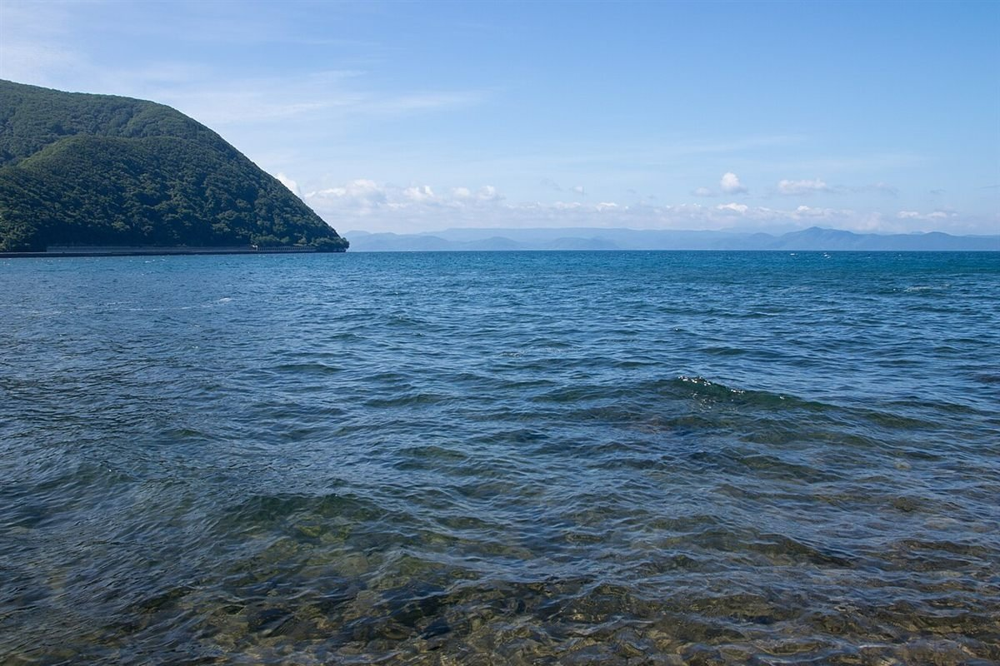

moon cafe
滋賀県長浜市元浜町13-39
制作側の案ふらりと寄れる、ひと休みの場所
滋賀県長浜市元浜町にあるカフェ、moon cafe の試作ページです。

イメージ写真掲載の写真はフリー素材のイメージです。お店の写真ではなく、撮影地もお店の周辺とは限りません。一部は他の地域で撮影されたもの、撮影地が不明なものを含みます。
いま分かっていること
| 店名 | moon cafe(カフェ) |
|---|---|
| 所在地 | 滋賀県長浜市元浜町13-39 |
| 電話 | 070-7819-5722 |
| @mooncafe03 | |
| 営業時間 | 準備中(お問い合わせください) |
| 定休日 | 準備中(お問い合わせください) |
制作側の案
制作側からのご提案
「ふらりと立ち寄れる、ひと休みの場所」。そんなイメージで、このページを組み立てました。
これはお店の考えをうかがう前の、制作側の案です。お店の実際の方針とは限りません。
風景のイメージ



掲載の写真はフリー素材のイメージです。お店の写真ではなく、撮影地もお店の周辺とは限りません。一部は他の地域で撮影されたもの、撮影地が不明なものを含みます。
ご来店までの流れ
最新情報はInstagramで
お店からのお知らせは、Instagramで確認できます。
Instagramを見る営業時間・メニューはお電話で
営業時間やメニューは準備中です。お電話でお問い合わせください。
070-7819-5722地図で場所を確認
住所と地図は、アクセスのページに載せています。
アクセスを見る
営業時間やメニューは準備中です。お電話でお問い合わせください。
電話する 070-7819-5722